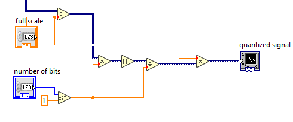

Experiment 7.1
Sampling and Quantization
Equipment
- Test board
- Lab PC
Part A: Sample Rate and Aliasing
When we convert a continuous, analog signal to a digital signal (digitize it), we sample its value at regular intervals. The sequence of numbers that results represents the original signal at these sample points, but ignores what goes on between them. If the signal is sufficiently well-behaved (i.e. it satisfies the Nyquist criterion and contains no energy at frequencies greater than half the sampling frequency), then these sample points are enough to represent the original signal exactly. But if the original signal contains a frequency greater than half the sampling rate, that frequency will be aliased to a lower frequency.
Let's start by looking at what sampling looks like in the time domain.
-
Connect the function generator output and CH1 of the scope to A/D input4 (pin 46 on the interface board socket strip).
-
Set the function generator to produce a \(5 V_{ pp }\), 300 Hz sine wave.
-
Download the spectrum analyzer and open in Labview. Set "number of samples per channel" and "rate" to 10000. Set "averaging mode" to RMS averaging. Start the program by pressing the run button or by pressing CTRL-R with the cursor over the window.
Note
Here's what we have:
-
Right-click on the black box indicating waveform type above the Signal waveform, which says Dev1/ai4. Select Common Plots and select the 2nd option (points only). You should see about three cycles of a sine wave displayed in the waveform graph. Unlike last week's display, the samples are shown as individual dots, rather than connected line segments.
-
Slowly increase the frequency to 2 kHz and note how the waveform becomes less clear.
-
At 2 kHz, press
STOP. You should see either several lines or several overlapping sine waves. This is an illusion caused by the fact that only a few samples of each cycle are being taken. How many samples are being taken per cycle? Take a screenshot. -
To see the actual underlying waveform more clearly, switch the display to a continuous line style from the "Common Plots" submenu.
-
Restart the program and continue increasing the frequency of the function generator until you reach 5 kHz, stopping at several points along the way to examine the waveform. When the function generator frequency is exactly half the sampling frequency the samples will alternate the same positive and negative values. (This may be easier to see by switching to the vertical line plot display style.)
-
Add a fundamental frequency indicator (Frequency.vi) to your block diagram to display the frequency numerically.
-
Continue increasing the function generator frequency. Notice that as you approach 10 kHz, you begin to see a well-defined sine wave which decreases in frequency as you increase the function generator frequency. This is the alias of the generator frequency. At exactly 10 kHz you should get a zero frequency sine wave.
-
Continue increasing the function generator frequency past 10 kHz. Note that you once again have a sine wave that increases in frequency as the input frequency increases. Do the input frequency and displayed frequency match? Pick two input frequencies to comment on.
-
Explain the concept of aliasing, folding, and the Nyquist criterion, and relate to your results.
-
Try square and triangle waves of various frequencies and comment on what happens to them as the frequency changes.
-
Press the
STOPbutton and exit the waveform view program.
Part B: Amplitude Quantization
Once the input signal has been sampled, it must be represented as a number in the computer. Since there are a limited number of bits available to encode the number (12 in this case), there are only a limited number of values that can be exactly represented. Values in between two successive encodings must be rounded or truncated to one or the other. This process of forcing the continuous input range into a discrete set of values is called quantization.
-
Let's add a quantizer to our spectrum analyzer VI. Add the following blocks and connections to your VI. See the note below for the locations of function blocks.
 Note
All function blocks are found under Express \(\rightarrow\) Arithmetic and Comparison \(\rightarrow\) Express Numeric. The above function blocks include Divide, Multiply, Round to Nearest (indicated by square brackets) and Scale by Power of 2 (\(\alpha 2^n\)).
-
Connect the data signal to the leftmost Divide block, so that the full block diagram looks like this:
-
On the left hand side of the spectrum analyzer are two controls which control the quantization of the sampled signal. The full scale control sets the maximum allowed bits of the signal. The number of bits control sets the number of bits that may be represented within the allowed range. Set the full scale to 12 and experiment with higher and lower number of bits. What do you notice in the waveform display?
-
Change the input to the PS/PSD block to be the quantized signal instead of the signal coming from the DAQ cable. How does the spectrum change with quantization?
-
Change the input to the PS/PSD block back to be the signal coming from the DAQ.
-
Stop and exit the VI.